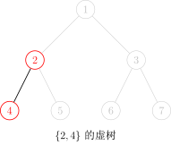
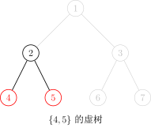
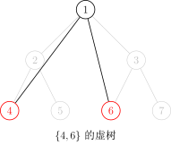

虚树
引入
在一场战争中，战场由 𝑛n 个岛屿和 𝑛 −1n−1 个桥梁组成，保证每两个岛屿间有且仅有一条路径可达．现在，我军已经侦查到敌军的总部在编号为 11 的岛屿，而且他们已经没有足够多的能源维系战斗，我军胜利在望．已知在其他 𝑘k 个岛屿上有丰富能源，为了防止敌军获取能源，我军的任务是炸毁一些桥梁，使得敌军不能到达任何能源丰富的岛屿．由于不同桥梁的材质和结构不同，所以炸毁不同的桥梁有不同的代价，我军希望在满足目标的同时使得总代价最小．
个岛屿和 𝑛 −1n−1 个桥梁组成，保证每两个岛屿间有且仅有一条路径可达．现在，我军已经侦查到敌军的总部在编号为 11 的岛屿，而且他们已经没有足够多的能源维系战斗，我军胜利在望．已知在其他 𝑘k 个岛屿上有丰富能源，为了防止敌军获取能源，我军的任务是炸毁一些桥梁，使得敌军不能到达任何能源丰富的岛屿．由于不同桥梁的材质和结构不同，所以炸毁不同的桥梁有不同的代价，我军希望在满足目标的同时使得总代价最小．
侦查部门还发现，敌军有一台神秘机器．即使我军切断所有能源之后，他们也可以用那台机器．机器产生的效果不仅仅会修复所有我军炸毁的桥梁，而且会重新随机资源分布（但可以保证的是，资源不会分布到 11 号岛屿上）．不过侦查部门还发现了这台机器只能够使用 𝑚m 次，所以我们只需要把每次任务完成即可．
对于所有数据，2 ≤𝑛 ≤2.5 ×105,1 ≤𝑚 ≤5 ×105,∑𝑘𝑖 ≤5 ×105,1 ≤𝑘𝑖 ≤𝑛 −12≤n≤2.5×105,1≤m≤5×105,∑ki≤5×105,1≤ki≤n−1．
朴素做法
对于上面那题，我们不难发现——如果树的点数很少，那么我们可以直接跑 DP．
首先我们称某次询问中被选中的点为——「关键点」 ．
设 𝐷𝑝(𝑖)Dp(i) 表示——使 𝑖i 不与其子树中任意一个关键点连通的 最小代价 ．
设 𝑤(𝑎,𝑏)w(a,b) 表示 𝑎a 与 𝑏b 之间的边的权值．
则枚举 𝑖i 的儿子 𝑣v：
- 若 𝑣v 不是关键点：𝐷𝑝(𝑖) =𝐷𝑝(𝑖) +min{𝐷𝑝(𝑣),𝑤(𝑖,𝑣)}Dp(i)=Dp(i)+min{Dp(v),w(i,v)}；
- 若 𝑣v 是关键点：𝐷𝑝(𝑖) =𝐷𝑝(𝑖) +𝑤(𝑖,𝑣)Dp(i)=Dp(i)+w(i,v)．
很好，这样我们得到了一份 𝑂(𝑛𝑞)O(nq) 的代码．
听起来很有意思．
优化做法
我们不难发现——其实很多点是没有用的．以下图为例：

如果我们选取的关键点是：

图中只有两个红色的点是 关键点 ，而别的点全都是「非关键点」．
对于这题来说，我们只需要保证红色的点无法到达 11 号节点就行了．
通过肉眼观察可以得出结论——11 号节点的右子树（虽然实际上可能有多个子树，但这里只有两个子树，所以暂时这么称呼了）一个红色节点都没有，所以没必要去 DP 它 ．
观察题目给出的条件，红色点（关键点）的总数是与 𝑛n 同阶的，也就是说实际上一次询问中红色的点对于整棵树来说是很稀疏的，所以如果我们能让复杂度由红色点的总数来决定就好了．
因此我们需要 浓缩信息，把一整颗大树浓缩成一颗小树 ．
虚树 Virtual Tree
由此我们引出了 「虚树」 这个概念．
我们先直观地来看看虚树的样子．
下图中，红色结点是我们选择的关键点．红色和黑色结点都是虚树中的点．黑色的边是虚树中的边．




因为任意两个关键点的 LCA 也是需要保存重要信息的，所以我们需要保存它们的 LCA，因此虚树中不一定只有关键点．
不难发现虚树中祖先后代的关系并不会改变．（就是不会出现原本 𝑎a 是 𝑏b 的祖先结果后面 𝑎a 变成 𝑏b 的后代了之类的鬼事）
但我们不可能 𝑂(𝑘2)O(k2) 暴力枚举 LCA，所以我们不难想到——首先将关键点按 DFS 序排序，然后排完序以后相邻的两个关键点（相邻指的是在排序后的序列中下标差值的绝对值等于 1）求一下 LCA，并把它加入虚树．
我们的当务之急就是如何构造虚树．
在提出方案之前，我们先确认一个事实——在虚树里，只要保证祖先后代的关系没有改变，就可以随意添加节点．
也就是，如果我们乐意，我们可以把原树中所有的点都加入虚树中，也不会导致 WA（虽然会导致 TLE）．
因此，我们为了方便，可以首先将 11 号节点加入虚树中，并且并不会影响答案．
第一种构造过程：二次排序 + LCA 连边
因为多个节点的 LCA 可能是同一个，所以我们不能多次将它加入虚树．
非常直观的一个方法是：
- 将关键点按 DFS 序排序；
- 遍历一遍，任意两个相邻的关键点求一下 LCA，并且判重；
- 然后根据原树中的祖先后代关系建树．
具体实现上，在 关键点序列 上，枚举 相邻的两个数 ，两两求得 LCA 并且加入序列 𝐴A 中．
因为 DFS 序的性质，此时的序列 𝐴A 已经包含了 虚树中的所有点 ，但是可能有重复．
所以我们把序列 𝐴A 按照 DFS 序 从小到大排序并去重 ．
最后，在序列 𝐴A 上，枚举 相邻 的两个 点编号 𝑥,𝑦x,y，求得它们的 LCA 并且连接 LCA(𝑥,𝑦),𝑦LCA(x,y),y，虚树就构造完成了．
为什么连接 LCA(𝑥,𝑦)LCA(x,y) 和 𝑦y 可以做到不重不漏呢？
证明
如果 𝑥x 是 𝑦y 的祖先，那么 𝑥x 直接到 𝑦y 连边．因为 DFS 序保证了 𝑥x 和 𝑦y 的 DFS 序是相邻的，所以 𝑥x 到 𝑦y 的路径上面没有关键点．
如果 𝑥x 不是 𝑦y 的祖先，那么就把 LCA(𝑥,𝑦)LCA(x,y) 当作 𝑦y 的祖先，根据上一种情况也可以证明 LCA(𝑥,𝑦)LCA(x,y) 到 𝑦y 点的路径上不会有关键点．
所以连接 LCA(𝑥,𝑦)LCA(x,y) 和 𝑦y，不会遗漏，也不会重复．
另外第一个点没有被一个节点连接会不会有影响呢？因为第一个点一定是这棵树的根，所以不会有影响，所以总边数就是 𝑚 −1m−1 条．
因为至少要两个实点才能够召唤出来一个虚点，再加上一个根节点，所以虚树的点数就是实点数量的两倍．
时间复杂度 𝑂(𝑚log𝑛)O(mlogn)，其中 𝑚m 为关键点数，𝑛n 为总点数．
实现
---|---
其实这样就足以构造一棵虚树了．
### 第二种构造过程：使用单调栈
如何使用单调栈构造虚树？
首先我们要明确一个目的——我们要用单调栈来维护一条虚树上的链．
也就是一个栈里相邻的两个节点在虚树上也是相邻的，而且栈是从底部到栈首单调递增的（指的是栈中节点 DFS 序单调递增），说白了就是某个节点的父亲就是栈中它下面的那个节点．
首先我们在栈中添加节点 11．
然后接下来按照 DFS 序从小到大添加关键节点．
假如当前的节点与栈顶节点的 LCA 就是栈顶节点的话，则说明它们是在一条链上的．所以直接把当前节点入栈就行了．

假如当前节点与栈顶节点的 LCA 不是栈顶节点的话：

这时，当前单调栈维护的链是：

而我们需要把链变成：

那么我们就把用虚线标出的结点弹栈即可，在弹栈前别忘了向它在虚树中的父亲连边．

假如弹出以后发现栈首不是 LCA 的话要让 LCA 入栈．
再把当前节点入栈就行了．
下面给出一个具体的例子．假设我们要对下面这棵树的 4，6 和 7 号结点建立虚树：

那么步骤是这样的：
* 将 3 个关键点 6,4,76,4,7 按照 DFS 序排序，得到序列 [4,6,7][4,6,7]．
* 将 11 入栈．

我们用红色的点代表在栈内的点，青色的点代表从栈中弹出的点．
* 取序列中第一个作为当前节点，也就是 44．再取栈顶元素，为 11．求 11 和 44 的 LCA：𝐿𝐶𝐴(1,4) =1LCA(1,4)=1．
* 发现 𝐿𝐶𝐴(1,4) =LCA(1,4)= 栈顶元素，说明它们在虚树的一条链上，所以直接把当前节点 44 入栈，当前栈为 4,14,1．

* 取序列第二个作为当前节点，为 66．再取栈顶元素，为 44．求 66 和 44 的 LCA：𝐿𝐶𝐴(6,4) =1LCA(6,4)=1．
* 发现 𝐿𝐶𝐴(6,4) ≠LCA(6,4)≠ 栈顶元素，进入判断阶段．
* 判断阶段：发现栈顶节点 44 的 DFS 序是大于 𝐿𝐶𝐴(6,4)LCA(6,4) 的，但是次大节点（栈顶节点下面的那个节点）11 的 DFS 序是等于 LCA 的（其实 DFS 序相等说明节点也相等），说明 LCA 已经入栈了，所以直接连接 1 →41→4 的边，也就是 LCA 到栈顶元素的边．并把 44 从栈中弹出．

* 结束了判断阶段，将 66 入栈，当前栈为 6,16,1．

* 取序列第三个作为当前节点，为 77．再取栈顶元素，为 66．求 77 和 66 的 LCA：𝐿𝐶𝐴(7,6) =3LCA(7,6)=3．
* 发现 𝐿𝐶𝐴(7,6) ≠LCA(7,6)≠ 栈顶元素，进入判断阶段．
* 判断阶段：发现栈顶节点 66 的 DFS 序是大于 𝐿𝐶𝐴(7,6)LCA(7,6) 的，但是次大节点（栈顶节点下面的那个节点）11 的 DFS 序是小于 LCA 的，说明 LCA 还没有入过栈，所以直接连接 3 →63→6 的边，也就是 LCA 到栈顶元素的边．把 66 从栈中弹出，并且把 𝐿𝐶𝐴(6,7)LCA(6,7) 入栈．
* 结束了判断阶段，将 77 入栈，当前栈为 1,3,71,3,7．

* 发现序列里的 3 个节点已经全部加入过栈了，退出循环．
* 此时栈中还有 3 个节点：1,3,71,3,7，很明显它们是一条链上的，所以直接链接：1 →31→3 和 3 →73→7 的边．
* 虚树就建完啦！

我们接下来将那些没入过栈的点（非青色的点）删掉，对应的虚树长这个样子：

其中有很多细节，比如用邻接表存图的方式存虚树的话，需要清空邻接表．但是直接清空整个邻接表是很慢的，所以我们在 **有一个从未入栈的元素入栈的时候清空该元素对应的邻接表** 即可．
时间复杂度同样为 𝑂(𝑚log𝑛)O(mlogn)（因为有排序），其中 𝑚m 为关键点数，𝑛n 为总点数．
#### 实现
建立虚树的 C++ 代码大概长这样：
代码实现
---|---
于是我们就学会了虚树的建立了！
对于消耗战这题，直接在虚树上跑最开始讲的那个 DP 就行了，我们等于利用了虚树排除了那些没用的非关键节点！仍然考虑 𝑖i 的所有儿子 𝑣v：
- 若 𝑣v 不是关键点：𝐷𝑝(𝑖) =𝐷𝑝(𝑖) +min{𝐷𝑝(𝑣),𝑤(𝑖,𝑣)}Dp(i)=Dp(i)+min{Dp(v),w(i,v)}
- 若 𝑣v 是关键点：𝐷𝑝(𝑖) =𝐷𝑝(𝑖) +𝑤(𝑖,𝑣)Dp(i)=Dp(i)+w(i,v)
于是这题很简单就过了．
推荐习题
本页面最近更新： 2026/4/23 03:45:48，更新历史 发现错误？想一起完善？在 GitHub 上编辑此页！ 本页面贡献者：Ir1d, sshwy, Tiphereth-A, Early0v0, H-J-Granger, StudyingFather, konnyakuxzy, countercurrent-time, Enter-tainer, greyqz, NachtgeistW, HeRaNO, ksyx, mgt, AngelKitty, CCXXXI, cjsoft, diauweb, ezoixx130, GekkaSaori, Konano, LovelyBuggies, Makkiy, minghu6, P-Y-Y, PotassiumWings, SamZhangQingChuan, SmallTualatin, Suyun514, weiyong1024, Xeonacid, y-kx-b, alphagocc, aofall, Chiechun, CoelacanthusHex, GavinZhengOI, Gesrua, GoodCoder666, Henry-ZHR, HTensor, hyx1124, iamtwz, kfy666, kxccc, lailai0916, lychees, Marcythm, mcendu, megakite, ouuan, Peanut-Tang, Persdre, r-value, shiftooo, shuzhouliu, SukkaW, szdytom, tder6, tth37, william-song-shy, yjl9903 本页面的全部内容在CC BY-SA 4.0 和 SATA 协议之条款下提供，附加条款亦可能应用